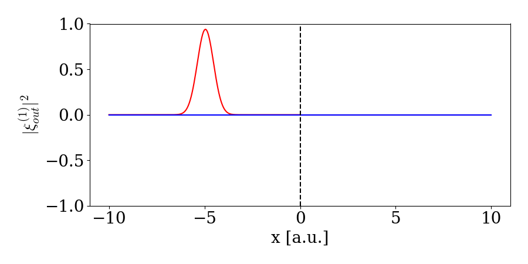

Scattering on two level system
In the following, we show that with our framwework we can reproduce the theoretical results obtained in Le Jeannic, et al. Nat. Phys. 18, 1191–1195 (2022)
In many of the examples considered so far, we only consider a single waveguide that serves as both input and output, thus only allowing for only one-sided cavities or quantum systems at the end of a waveguide. A more realistic scenario is having a waveguide with a quantum system in the middle. Here an incoming waveguide carying an excitation could scatter on the quantum system and one would have excitations going away from the quantum system in both the first and latter part of the waveguide as illustrated here:[1]

A way to model this scenario is to have two waveguides: a waveguide to the left and the right, describing the first half of the waveguide and the latter part of the waveguide. For this we use WaveguideBasis but with an extra argument specifying that we need 2 waveguides (see Two Waveguides for an introduction). We initialize WaveguideBasis with two waveguides and a basis for the atom (note that a fockbasis with only one excitation allowed is the same as a two-level-system):
times = 0:0.1:10
dt = times[2] - times[1]
bw = WaveguideBasis(2,2,times)
be = FockBasis(1)We then define the operators for the interaction between atom and waveguide as (notice the second argument in create(bw,1) that defines which waveguide we are adressing):
wdLa = create(bw,1) ⊗ destroy(be)
adwL = destroy(bw,1) ⊗ create(be)
wdRa = create(bw,2) ⊗ destroy(be)
adwR = destroy(bw,2) ⊗ create(be)where $\mathrm{wdLa} = w_L ^\dagger a$, $\mathrm{wdRa} = w_R ^\dagger a$, $\mathrm{adwL} = w_L a^\dagger$, and $\mathrm{adwR} = w_R a^\dagger$. In this example, we, however, also need an interaction between the waveguides. We therefore we define the creation and annihilation operators
wdL = create(bw,1) ⊗ identityoperator(be)
wL = destroy(bw,1) ⊗ identityoperator(be)
wdR = create(bw,2) ⊗ identityoperator(be)
wR = destroy(bw,2) ⊗ identityoperator(be)The interaction should carry over the momentum of the left pulse into the right waveguide and the interaction should therefore model a SWAP gate. This corresponds to $V = \pi /2$ and thus we have the interaction Hamiltonian:
V = pi/2
κ1 = 1
κ2 = 1
H = im*sqrt(κ1/dt)*(adwL-wdLa) + im*sqrt(κ2/dt)*(wdRa-adwR) + V/dt *(wdR*wL + wdL* wR)We can now study how single or two photon states scatter on the atom. We define the initial onephoton or twophoton gaussian state and solve it using the defined Hamiltonian:
ξ₁(t1,σ,t0) = sqrt(2/σ)* (log(2)/pi)^(1/4)*exp(-2*log(2)*(t1-t0)^2/σ^2)
ξ₂(t1,t2,σ1,σ2,t0) = ξ₁(t1,σ1,t0) * ξ₁(t2,σ2,t0)
w = 1
t0 = 5
ψ1 = onephoton(bw,1,ξ₁,times,w,t0) ⊗ fockstate(be,0)
ψ2 = twophoton(bw,1,ξ₂,times,w,w,t0) ⊗ fockstate(be,0)
ψScat1 = waveguide_evolution(times,ψ1,H)
ψScat2 = waveguide_evolution(times,ψ2,H)Viewing the scattered states is then done using TwoPhotonView and the index for the corresponding waveguide. Giving two indeces returns instead the combined single photon state in both waveguides $\sum_{j,k} \ket{1_j}_1 \ket{1_k}_2$:
ψ2LeftScat = TwoPhotonView(ψScat2,[:,1],1)
ψ2RightScat = TwoPhotonView(ψScat2,[:,1],2)
ψ2LeftRightScat = TwoPhotonView(ψScat2,[:,1],2,1)For the single photon states we have to calculate the two time scattered distribution as:
ψ1LeftScat = zeros(ComplexF64,(length(times),length(times)))
ψ1RightScat = zeros(ComplexF64,(length(times),length(times)))
ψ1LeftRightScat = zeros(ComplexF64,(length(times),length(times)))
ψ1Right = OnePhotonView(ψScat1,[:,1],1)
ψ1Left = OnePhotonView(ψScat1,[:,1],2)
for i in eachindex(times)
for j in eachindex(times)
ψ1LeftScat[i,j] = ψ1Left[i]*ψ1Left[j]
ψ1RightScat[i,j] = ψ1Right[i]*ψ1Right[j]
ψ1LeftRightScat[i,j] = ψ1Left[i]*ψ1Right[j]
end
endFinall, this can be plotted and we note that this matches fig. 3 in Ref. ^[1]:
fig,axs = subplots(3,2,figsize=(9,17))
plot_list = [ψ2LeftScat,ψ2RightScat,ψ2LeftRightScat,ψ1LeftScat,ψ1RightScat,ψ1LeftRightScat]
for (i,ax) in enumerate(axs)
plot_twophoton!(ax,plot_list[i],times)
end
axs[1].set_ylabel("\$C^{RR}\$ \n t2 [a.u]")
axs[2].set_ylabel("\$C^{LL}\$ \n t2 [a.u]")
axs[3].set_ylabel("\$C^{LR}\$ \n t2 [a.u]")
axs[3].set_xlabel("t1 [a.u]")
axs[6].set_xlabel("t1 [a.u]")
plt.tight_layout()[ Info: Installing matplotlib via the Conda matplotlib package...
[ Info: Running `conda install -q -y matplotlib` in root environment
Collecting package metadata (current_repodata.json): ...working... done
Solving environment: ...working... done
## Package Plan ##
environment location: /home/runner/.julia/conda/3/x86_64
added / updated specs:
- matplotlib
The following packages will be downloaded:
package | build
---------------------------|-----------------
alsa-lib-1.2.8 | h166bdaf_0 578 KB conda-forge
attr-2.5.1 | h166bdaf_1 69 KB conda-forge
brotli-1.0.9 | h166bdaf_8 18 KB conda-forge
brotli-bin-1.0.9 | h166bdaf_8 20 KB conda-forge
cairo-1.16.0 | h35add3b_1015 1.1 MB conda-forge
contourpy-1.0.7 | py310hdf3cbec_0 211 KB conda-forge
cycler-0.11.0 | pyhd8ed1ab_0 10 KB conda-forge
dbus-1.13.6 | h5008d03_3 604 KB conda-forge
expat-2.5.0 | hcb278e6_1 134 KB conda-forge
font-ttf-dejavu-sans-mono-2.37| hab24e00_0 388 KB conda-forge
font-ttf-inconsolata-3.000 | h77eed37_0 94 KB conda-forge
font-ttf-source-code-pro-2.038| h77eed37_0 684 KB conda-forge
font-ttf-ubuntu-0.83 | hab24e00_0 1.9 MB conda-forge
fontconfig-2.14.2 | h14ed4e7_0 266 KB conda-forge
fonts-conda-ecosystem-1 | 0 4 KB conda-forge
fonts-conda-forge-1 | 0 4 KB conda-forge
fonttools-4.39.3 | py310h1fa729e_0 2.0 MB conda-forge
freetype-2.12.1 | hca18f0e_1 611 KB conda-forge
gettext-0.21.1 | h27087fc_0 4.1 MB conda-forge
glib-2.74.1 | h6239696_1 474 KB conda-forge
glib-tools-2.74.1 | h6239696_1 107 KB conda-forge
graphite2-1.3.13 | h58526e2_1001 102 KB conda-forge
gst-plugins-base-1.22.0 | h4243ec0_2 2.6 MB conda-forge
gstreamer-1.22.0 | h25f0c4b_2 1.9 MB conda-forge
harfbuzz-6.0.0 | h3ff4399_1 1.2 MB conda-forge
icu-72.1 | hcb278e6_0 11.4 MB conda-forge
keyutils-1.6.1 | h166bdaf_0 115 KB conda-forge
kiwisolver-1.4.4 | py310hbf28c38_1 76 KB conda-forge
krb5-1.20.1 | h81ceb04_0 1.3 MB conda-forge
lame-3.100 | h166bdaf_1003 496 KB conda-forge
lcms2-2.15 | haa2dc70_1 236 KB conda-forge
lerc-4.0.0 | h27087fc_0 275 KB conda-forge
libbrotlicommon-1.0.9 | h166bdaf_8 66 KB conda-forge
libbrotlidec-1.0.9 | h166bdaf_8 33 KB conda-forge
libbrotlienc-1.0.9 | h166bdaf_8 288 KB conda-forge
libcap-2.67 | he9d0100_0 97 KB conda-forge
libclang-16.0.1 |default_h62803fd_0 20 KB conda-forge
libclang13-16.0.1 |default_h9b593c0_0 9.8 MB conda-forge
libcups-2.3.3 | h36d4200_3 4.3 MB conda-forge
libdeflate-1.18 | h0b41bf4_0 64 KB conda-forge
libedit-3.1.20191231 | he28a2e2_2 121 KB conda-forge
libevent-2.1.10 | h28343ad_4 1.1 MB conda-forge
libexpat-2.5.0 | hcb278e6_1 76 KB conda-forge
libflac-1.4.2 | h27087fc_0 411 KB conda-forge
libgcrypt-1.10.1 | h166bdaf_0 703 KB conda-forge
libglib-2.74.1 | h606061b_1 3.1 MB conda-forge
libgpg-error-1.46 | h620e276_0 252 KB conda-forge
libiconv-1.17 | h166bdaf_0 1.4 MB conda-forge
libjpeg-turbo-2.1.5.1 | h0b41bf4_0 479 KB conda-forge
libllvm16-16.0.1 | hadd5161_0 33.4 MB conda-forge
libogg-1.3.4 | h7f98852_1 206 KB conda-forge
libopus-1.3.1 | h7f98852_1 255 KB conda-forge
libpng-1.6.39 | h753d276_0 276 KB conda-forge
libpq-15.2 | hb675445_0 2.3 MB conda-forge
libsndfile-1.2.0 | hb75c966_0 342 KB conda-forge
libsystemd0-253 | h8c4010b_1 372 KB conda-forge
libtiff-4.5.0 | ha587672_6 398 KB conda-forge
libvorbis-1.3.7 | h9c3ff4c_0 280 KB conda-forge
libwebp-base-1.3.0 | h0b41bf4_0 348 KB conda-forge
libxcb-1.13 | h7f98852_1004 391 KB conda-forge
libxkbcommon-1.5.0 | h79f4944_1 550 KB conda-forge
libxml2-2.10.3 | hfdac1af_6 697 KB conda-forge
lz4-c-1.9.4 | hcb278e6_0 140 KB conda-forge
matplotlib-3.7.1 | py310hff52083_0 8 KB conda-forge
matplotlib-base-3.7.1 | py310he60537e_0 6.5 MB conda-forge
mpg123-1.31.3 | hcb278e6_0 474 KB conda-forge
munkres-1.1.4 | pyh9f0ad1d_0 12 KB conda-forge
mysql-common-8.0.32 | ha901b37_1 742 KB conda-forge
mysql-libs-8.0.32 | hd7da12d_1 1.5 MB conda-forge
nspr-4.35 | h27087fc_0 222 KB conda-forge
nss-3.89 | he45b914_0 1.9 MB conda-forge
openjpeg-2.5.0 | hfec8fc6_2 344 KB conda-forge
pcre2-10.40 | hc3806b6_0 2.3 MB conda-forge
pillow-9.5.0 | py310h065c6d2_0 44.3 MB conda-forge
pixman-0.40.0 | h36c2ea0_0 627 KB conda-forge
ply-3.11 | py_1 44 KB conda-forge
pthread-stubs-0.4 | h36c2ea0_1001 5 KB conda-forge
pulseaudio-client-16.1 | h5195f5e_3 735 KB conda-forge
pyparsing-3.0.9 | pyhd8ed1ab_0 79 KB conda-forge
pyqt-5.15.7 | py310hab646b1_3 5.0 MB conda-forge
pyqt5-sip-12.11.0 | py310heca2aa9_3 83 KB conda-forge
python-dateutil-2.8.2 | pyhd8ed1ab_0 240 KB conda-forge
qt-main-5.15.8 | h5c52f38_9 50.2 MB conda-forge
sip-6.7.7 | py310heca2aa9_1 480 KB conda-forge
six-1.16.0 | pyh6c4a22f_0 14 KB conda-forge
toml-0.10.2 | pyhd8ed1ab_0 18 KB conda-forge
tornado-6.2 | py310h5764c6d_1 662 KB conda-forge
unicodedata2-15.0.0 | py310h5764c6d_0 500 KB conda-forge
xcb-util-0.4.0 | h166bdaf_0 20 KB conda-forge
xcb-util-image-0.4.0 | h166bdaf_0 24 KB conda-forge
xcb-util-keysyms-0.4.0 | h166bdaf_0 12 KB conda-forge
xcb-util-renderutil-0.3.9 | h166bdaf_0 15 KB conda-forge
xcb-util-wm-0.4.1 | h166bdaf_0 55 KB conda-forge
xkeyboard-config-2.38 | h0b41bf4_0 861 KB conda-forge
xorg-kbproto-1.0.7 | h7f98852_1002 27 KB conda-forge
xorg-libice-1.0.10 | h7f98852_0 58 KB conda-forge
xorg-libsm-1.2.3 | hd9c2040_1000 26 KB conda-forge
xorg-libx11-1.8.4 | h0b41bf4_0 810 KB conda-forge
xorg-libxau-1.0.9 | h7f98852_0 13 KB conda-forge
xorg-libxdmcp-1.1.3 | h7f98852_0 19 KB conda-forge
xorg-libxext-1.3.4 | h0b41bf4_2 49 KB conda-forge
xorg-libxrender-0.9.10 | h7f98852_1003 32 KB conda-forge
xorg-renderproto-0.11.1 | h7f98852_1002 9 KB conda-forge
xorg-xextproto-7.3.0 | h0b41bf4_1003 30 KB conda-forge
xorg-xf86vidmodeproto-2.3.1| h7f98852_1002 23 KB conda-forge
xorg-xproto-7.0.31 | h7f98852_1007 73 KB conda-forge
zlib-1.2.13 | h166bdaf_4 92 KB conda-forge
------------------------------------------------------------
Total: 214.2 MB
The following NEW packages will be INSTALLED:
alsa-lib conda-forge/linux-64::alsa-lib-1.2.8-h166bdaf_0
attr conda-forge/linux-64::attr-2.5.1-h166bdaf_1
brotli conda-forge/linux-64::brotli-1.0.9-h166bdaf_8
brotli-bin conda-forge/linux-64::brotli-bin-1.0.9-h166bdaf_8
cairo conda-forge/linux-64::cairo-1.16.0-h35add3b_1015
contourpy conda-forge/linux-64::contourpy-1.0.7-py310hdf3cbec_0
cycler conda-forge/noarch::cycler-0.11.0-pyhd8ed1ab_0
dbus conda-forge/linux-64::dbus-1.13.6-h5008d03_3
expat conda-forge/linux-64::expat-2.5.0-hcb278e6_1
font-ttf-dejavu-s~ conda-forge/noarch::font-ttf-dejavu-sans-mono-2.37-hab24e00_0
font-ttf-inconsol~ conda-forge/noarch::font-ttf-inconsolata-3.000-h77eed37_0
font-ttf-source-c~ conda-forge/noarch::font-ttf-source-code-pro-2.038-h77eed37_0
font-ttf-ubuntu conda-forge/noarch::font-ttf-ubuntu-0.83-hab24e00_0
fontconfig conda-forge/linux-64::fontconfig-2.14.2-h14ed4e7_0
fonts-conda-ecosy~ conda-forge/noarch::fonts-conda-ecosystem-1-0
fonts-conda-forge conda-forge/noarch::fonts-conda-forge-1-0
fonttools conda-forge/linux-64::fonttools-4.39.3-py310h1fa729e_0
freetype conda-forge/linux-64::freetype-2.12.1-hca18f0e_1
gettext conda-forge/linux-64::gettext-0.21.1-h27087fc_0
glib conda-forge/linux-64::glib-2.74.1-h6239696_1
glib-tools conda-forge/linux-64::glib-tools-2.74.1-h6239696_1
graphite2 conda-forge/linux-64::graphite2-1.3.13-h58526e2_1001
gst-plugins-base conda-forge/linux-64::gst-plugins-base-1.22.0-h4243ec0_2
gstreamer conda-forge/linux-64::gstreamer-1.22.0-h25f0c4b_2
harfbuzz conda-forge/linux-64::harfbuzz-6.0.0-h3ff4399_1
icu conda-forge/linux-64::icu-72.1-hcb278e6_0
keyutils conda-forge/linux-64::keyutils-1.6.1-h166bdaf_0
kiwisolver conda-forge/linux-64::kiwisolver-1.4.4-py310hbf28c38_1
krb5 conda-forge/linux-64::krb5-1.20.1-h81ceb04_0
lame conda-forge/linux-64::lame-3.100-h166bdaf_1003
lcms2 conda-forge/linux-64::lcms2-2.15-haa2dc70_1
lerc conda-forge/linux-64::lerc-4.0.0-h27087fc_0
libbrotlicommon conda-forge/linux-64::libbrotlicommon-1.0.9-h166bdaf_8
libbrotlidec conda-forge/linux-64::libbrotlidec-1.0.9-h166bdaf_8
libbrotlienc conda-forge/linux-64::libbrotlienc-1.0.9-h166bdaf_8
libcap conda-forge/linux-64::libcap-2.67-he9d0100_0
libclang conda-forge/linux-64::libclang-16.0.1-default_h62803fd_0
libclang13 conda-forge/linux-64::libclang13-16.0.1-default_h9b593c0_0
libcups conda-forge/linux-64::libcups-2.3.3-h36d4200_3
libdeflate conda-forge/linux-64::libdeflate-1.18-h0b41bf4_0
libedit conda-forge/linux-64::libedit-3.1.20191231-he28a2e2_2
libevent conda-forge/linux-64::libevent-2.1.10-h28343ad_4
libexpat conda-forge/linux-64::libexpat-2.5.0-hcb278e6_1
libflac conda-forge/linux-64::libflac-1.4.2-h27087fc_0
libgcrypt conda-forge/linux-64::libgcrypt-1.10.1-h166bdaf_0
libglib conda-forge/linux-64::libglib-2.74.1-h606061b_1
libgpg-error conda-forge/linux-64::libgpg-error-1.46-h620e276_0
libiconv conda-forge/linux-64::libiconv-1.17-h166bdaf_0
libjpeg-turbo conda-forge/linux-64::libjpeg-turbo-2.1.5.1-h0b41bf4_0
libllvm16 conda-forge/linux-64::libllvm16-16.0.1-hadd5161_0
libogg conda-forge/linux-64::libogg-1.3.4-h7f98852_1
libopus conda-forge/linux-64::libopus-1.3.1-h7f98852_1
libpng conda-forge/linux-64::libpng-1.6.39-h753d276_0
libpq conda-forge/linux-64::libpq-15.2-hb675445_0
libsndfile conda-forge/linux-64::libsndfile-1.2.0-hb75c966_0
libsystemd0 conda-forge/linux-64::libsystemd0-253-h8c4010b_1
libtiff conda-forge/linux-64::libtiff-4.5.0-ha587672_6
libvorbis conda-forge/linux-64::libvorbis-1.3.7-h9c3ff4c_0
libwebp-base conda-forge/linux-64::libwebp-base-1.3.0-h0b41bf4_0
libxcb conda-forge/linux-64::libxcb-1.13-h7f98852_1004
libxkbcommon conda-forge/linux-64::libxkbcommon-1.5.0-h79f4944_1
libxml2 conda-forge/linux-64::libxml2-2.10.3-hfdac1af_6
lz4-c conda-forge/linux-64::lz4-c-1.9.4-hcb278e6_0
matplotlib conda-forge/linux-64::matplotlib-3.7.1-py310hff52083_0
matplotlib-base conda-forge/linux-64::matplotlib-base-3.7.1-py310he60537e_0
mpg123 conda-forge/linux-64::mpg123-1.31.3-hcb278e6_0
munkres conda-forge/noarch::munkres-1.1.4-pyh9f0ad1d_0
mysql-common conda-forge/linux-64::mysql-common-8.0.32-ha901b37_1
mysql-libs conda-forge/linux-64::mysql-libs-8.0.32-hd7da12d_1
nspr conda-forge/linux-64::nspr-4.35-h27087fc_0
nss conda-forge/linux-64::nss-3.89-he45b914_0
openjpeg conda-forge/linux-64::openjpeg-2.5.0-hfec8fc6_2
pcre2 conda-forge/linux-64::pcre2-10.40-hc3806b6_0
pillow conda-forge/linux-64::pillow-9.5.0-py310h065c6d2_0
pixman conda-forge/linux-64::pixman-0.40.0-h36c2ea0_0
ply conda-forge/noarch::ply-3.11-py_1
pthread-stubs conda-forge/linux-64::pthread-stubs-0.4-h36c2ea0_1001
pulseaudio-client conda-forge/linux-64::pulseaudio-client-16.1-h5195f5e_3
pyparsing conda-forge/noarch::pyparsing-3.0.9-pyhd8ed1ab_0
pyqt conda-forge/linux-64::pyqt-5.15.7-py310hab646b1_3
pyqt5-sip conda-forge/linux-64::pyqt5-sip-12.11.0-py310heca2aa9_3
python-dateutil conda-forge/noarch::python-dateutil-2.8.2-pyhd8ed1ab_0
qt-main conda-forge/linux-64::qt-main-5.15.8-h5c52f38_9
sip conda-forge/linux-64::sip-6.7.7-py310heca2aa9_1
six conda-forge/noarch::six-1.16.0-pyh6c4a22f_0
toml conda-forge/noarch::toml-0.10.2-pyhd8ed1ab_0
tornado conda-forge/linux-64::tornado-6.2-py310h5764c6d_1
unicodedata2 conda-forge/linux-64::unicodedata2-15.0.0-py310h5764c6d_0
xcb-util conda-forge/linux-64::xcb-util-0.4.0-h166bdaf_0
xcb-util-image conda-forge/linux-64::xcb-util-image-0.4.0-h166bdaf_0
xcb-util-keysyms conda-forge/linux-64::xcb-util-keysyms-0.4.0-h166bdaf_0
xcb-util-renderut~ conda-forge/linux-64::xcb-util-renderutil-0.3.9-h166bdaf_0
xcb-util-wm conda-forge/linux-64::xcb-util-wm-0.4.1-h166bdaf_0
xkeyboard-config conda-forge/linux-64::xkeyboard-config-2.38-h0b41bf4_0
xorg-kbproto conda-forge/linux-64::xorg-kbproto-1.0.7-h7f98852_1002
xorg-libice conda-forge/linux-64::xorg-libice-1.0.10-h7f98852_0
xorg-libsm conda-forge/linux-64::xorg-libsm-1.2.3-hd9c2040_1000
xorg-libx11 conda-forge/linux-64::xorg-libx11-1.8.4-h0b41bf4_0
xorg-libxau conda-forge/linux-64::xorg-libxau-1.0.9-h7f98852_0
xorg-libxdmcp conda-forge/linux-64::xorg-libxdmcp-1.1.3-h7f98852_0
xorg-libxext conda-forge/linux-64::xorg-libxext-1.3.4-h0b41bf4_2
xorg-libxrender conda-forge/linux-64::xorg-libxrender-0.9.10-h7f98852_1003
xorg-renderproto conda-forge/linux-64::xorg-renderproto-0.11.1-h7f98852_1002
xorg-xextproto conda-forge/linux-64::xorg-xextproto-7.3.0-h0b41bf4_1003
xorg-xf86vidmodep~ conda-forge/linux-64::xorg-xf86vidmodeproto-2.3.1-h7f98852_1002
xorg-xproto conda-forge/linux-64::xorg-xproto-7.0.31-h7f98852_1007
zlib conda-forge/linux-64::zlib-1.2.13-h166bdaf_4
Preparing transaction: ...working... done
Verifying transaction: ...working... done
Executing transaction: ...working... done
/home/runner/.julia/conda/3/x86_64/lib/python3.10/site-packages/matplotlib/contour.py:1454: ComplexWarning: Casting complex values to real discards the imaginary part
self.zmax = float(z.max())
/home/runner/.julia/conda/3/x86_64/lib/python3.10/site-packages/matplotlib/contour.py:1455: ComplexWarning: Casting complex values to real discards the imaginary part
self.zmin = float(z.min())
/home/runner/.julia/conda/3/x86_64/lib/python3.10/site-packages/numpy/ma/core.py:2820: ComplexWarning: Casting complex values to real discards the imaginary part
_data = np.array(data, dtype=dtype, copy=copy,
If we consider the single photon state, we can also visualize the temporal evolution as:
